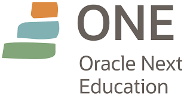
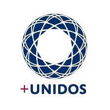
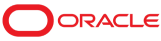
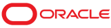

O ONE é um programa de educação e empregabilidade com objetivo soci
al de capacitar pessoas em tecnologia e conectá-las com o mercado de
trabalho por meio de empresas parceiras
O curso é 100% online e totalmente gratuito, feito para quem não teve acesso à
educação de qualidade e deseja transformar a sua realidade social.
O programa abre as inscrições 2 vezes ao ano.
Cada geração de alunos cumpre uma jornada de 6 meses, dividida
em 4 trilhas disponibilizadas na plataforma – ao todo são mais de 560 horas de experiência de conteúdo.
Ao finalizar a participação no ONE, os estudantes ainda têm a oportunidade de fazer parte da comunidade
AlumniONE para ex-alunos, com outros benefícios gratuitos e trilhas Oracle exclusivas.
Essa é uma parceria Oracle e Grupo + Unidos

O Grupo +Unidos é uma organização da sociedade civil sem fins lucrativos.
A instituição nasceu em 2008, a partir do desejo da missão diplomática
americana em mobilizar empresas no objetivo de promover uma transformação social no Brasil.
 
